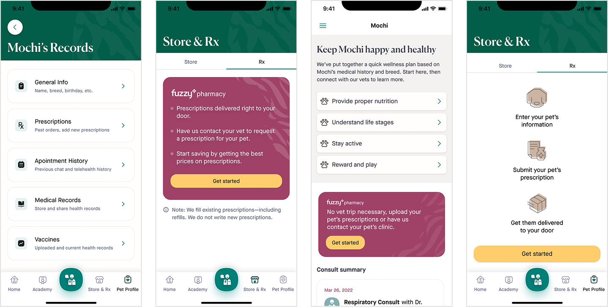
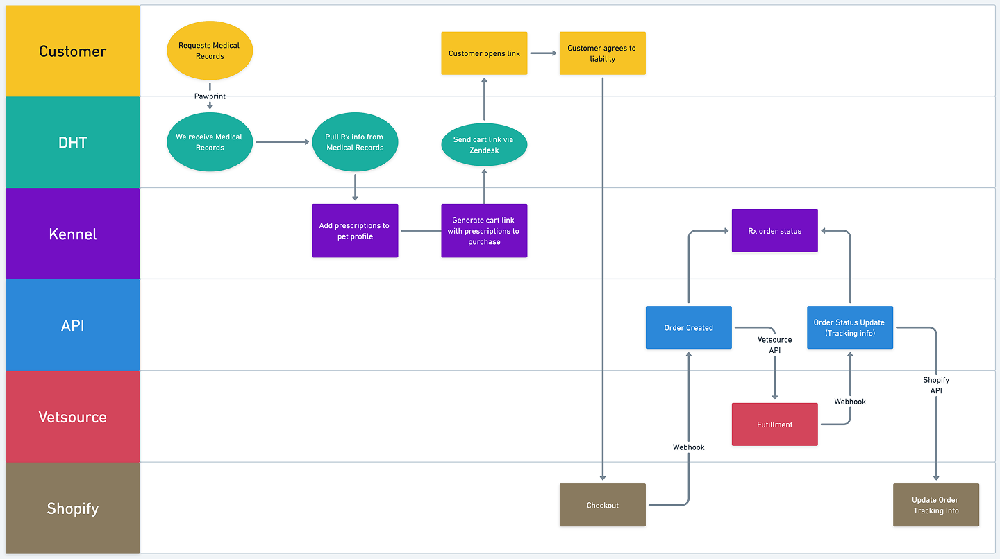
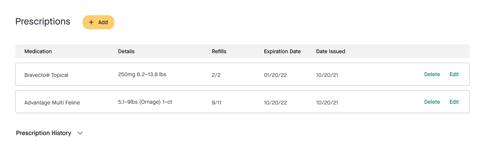
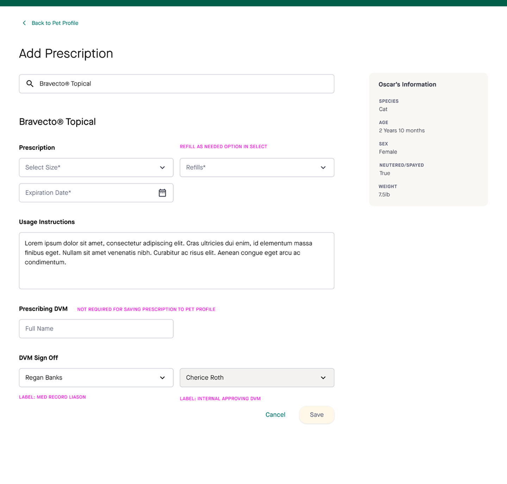
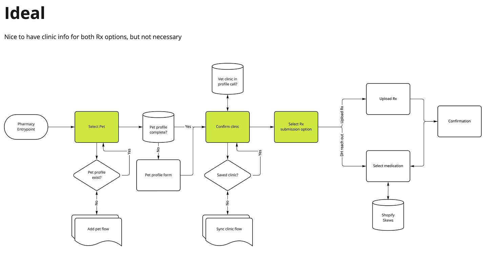
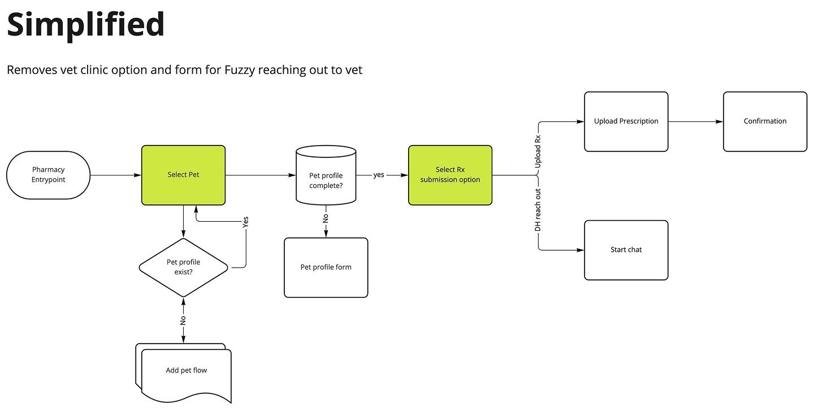
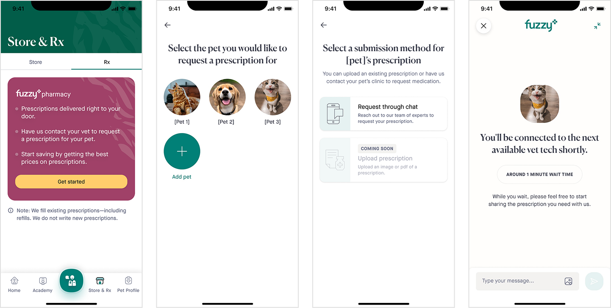
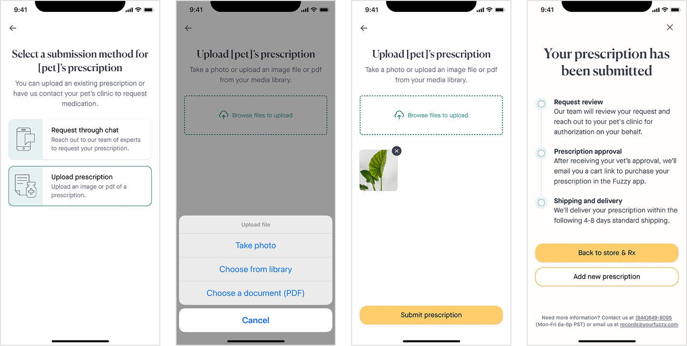
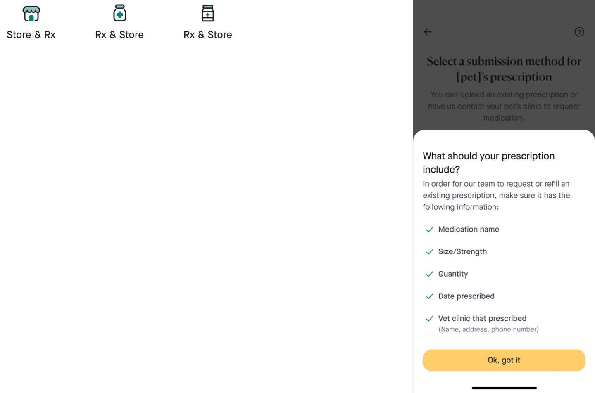

Fuzzy Pharmacy
Finding product market fit with a new product vertical, prescriptions.

The Situation
There was a significant misalignment between user mental models and the realities of digital veterinary care. In most jurisdictions, state law mandates that a veterinarian perform a physical, in-person examination of an animal before a prescription can be legally issued. Members expected a fully digital "chat-to-prescription" experience and were often frustrated when a virtual vet visit couldn't immediately result in a prescription.
The goal was to create a workflow to distinguish between "fulfillment" (refilling existing prescriptions from an in-person vet) and "new prescriptions." This ensured our clinical staff remained compliant while still providing a high-value service to the pet parent.
Test & learn leveraging internal teams

Defining the base experience
To identify the shifts required for the initial milestone, I facilitated a cross-functional service mapping session. Our goal was to architect the “future state” for the soft launch of Rx. By bringing together Engineering, Clinical, and Product stakeholders, we were able to pinpoint the touch points and technical dependencies.
Utilize a pet’s med records to soft launch by Digital Health (DH) and Member Experience (MX) teams proactively reaching out to customers.
The main touch point for the design team to create an experience for was the pet profile in the internal tool: Kennel.


Updating internal tooling
I partnered with the Digital Health (DH) and Member Experience (MX) team to define a data entry system for pet prescriptions, including:
- Prescription name
- Prescription size
- Usage directions
- Prescribing DVM
- Prescription expiration date
- Refill options
Key pet data was surfaced within the “add prescription” flow. This ensured that clinicians had all necessary data points in a single view, proactively reducing manual lookup time and data entry errors.
Build new internal tools features using Material.
Defining the in-app experience


What is in scope for the MVP customer experience?
To accelerate the feedback loop, I created a streamlined three-stage user flow based on initial conversations. I reviewed the flow with engineering and MX to understand feasibility and data integrity, learning confirmation of clinic was nice to have, but not necessary.
I authored a scope document to drive stakeholder alignment:
- In scope: Integrating a high-visibility value proposition into the existing care journey to drive adoption
- Out-of-scope: We intentionally deferred the integration of prescriptions as individual SKUs in the "Shop" tab, a decision I advocated for due to low volume
By distilling the feedback into a simplified, high-velocity request flow, I ensured the team remained focused on the primary job-to-be-done.
From this point onward, designer Emilia Kaitazoff was the IC designer while I acted as PM and gave direction and coaching as the Design Manager.
Adjusting the purchase journey
Entrypoint
The Store tab was a webview with a few native components built on top of it. Design was unsure if it would be easy to build within, leading to the exploration of a few options on where Rx would live. Engineering ultimately green lit building within Store. The other explorations were still considered as back doors into Rx.

Rx through chat
The in-app work was split into two launches with a goal of launching Rx through chat first. Since chat was an existing feature we were able to move quickly to roll out a customer facing experience. I worked with the designer to ensure the designs would be flexible and account for uploading prescriptions as a fast follow.

Upload Rx
The second launch gave the pet parent the option to upload an existing prescription. This was a feature that also matched most major competitors.
Iterate & fast follows

Iterative A/B testing
The company made a strategic decision to focus on Rx over everyday e-commerce. We highlighted this in our tab bar, working on a new icon. I partnered with the designer to ensure the new icon followed the correct visual patterns.
The designer identified an opportunity to communicate more clearly the requirements of a prescription upfront to ensure it can be filled by Fuzzy.
Results
- Defined the MVP customer journey for Fuzzy’s new pharmacy vertical.
- Aligned product, design, operations, and veterinary stakeholders around the prescription service model.
- Identified key internal workflow needs before scaling the customer-facing experience.
Reflection
Pharmacy was a strong reminder that service design is product design. The customer experience could only be clear if the internal experience, operational handoffs, and clinical responsibilities were also clear.